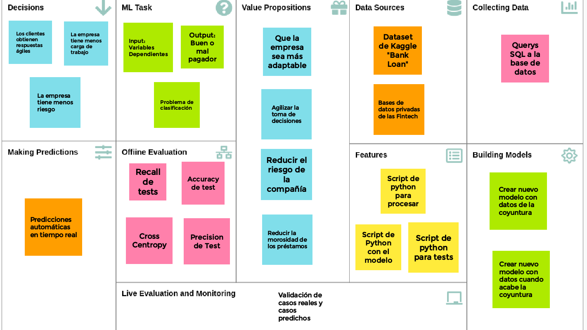
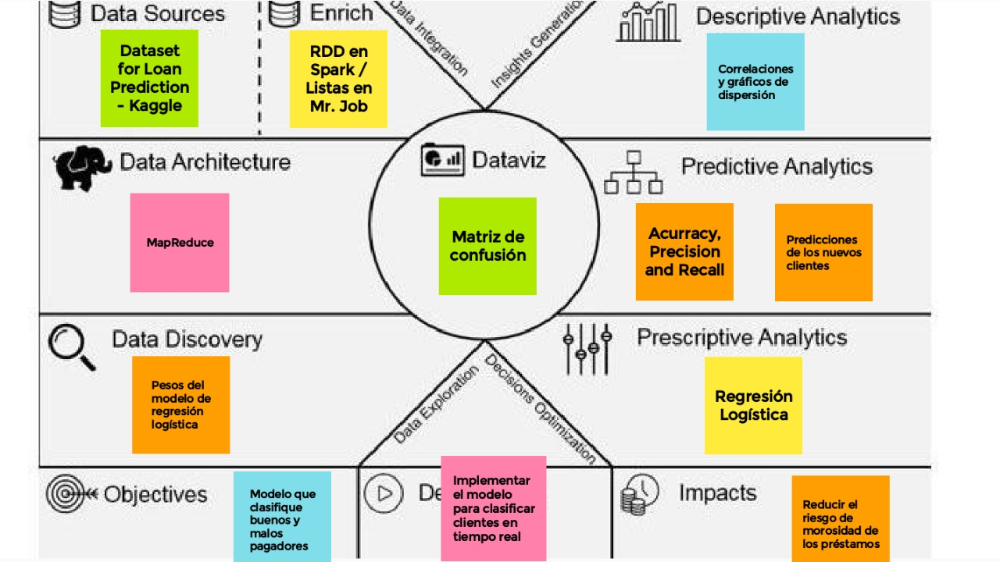

El Problema
Para este proyecto, decidimos aplicar una regresión logística debido al corto tiempo con el que se cuenta para tomar decisiones y responder a una situación tan inestable como lo es la conyuntura actual. La regresión logística es un algoritmo de clasificación que usa un número n de variables independientes y para predecir el valor de una variable dependiente categórica x. Es decir, los datos se procesan en una regresión linal que luego es transformada por una función logística (zimbiode) que predice las categorías de la variable dependiente.
Las Fintech son empresas del sector financiero que ofrecen productos y servicios innovadores a través del uso intensivo de las tecnologías de la información. Estas empresas utilizan la tecnología para reducir costos y simplificar procesos, lo cual les permite ser muy competitivas en el sector. Asimismo, existen diversos tipos de empresas Fintech con diferentes públicos objetivo. Por ejemplo, están las que realizan el servicio de factoring, cambio de divisas, microcréditos, préstamos, entre otros. Por otro lado, este modelo de negocio innovador presenta algunas desventajas entre las cuales se encuentran la dependencia necesaria de la tecnología, la necesidad de contar con colaboradores que estén familiarizados con las nuevas tecnologías, deben tener un modelo de negocio sólido que les permita garantizar la rentabilidad de la empresa y los recursos computacionales de estas empresas son limitados en comparación a los de un banco tradicional, lo cual dificulta el procesamiento de los grandes volúmenes de datos que reciben diariamente.En consecuencia, muchas de estas entidades financieras pequeñas se encuentran en un estado de incertidumbre frente a la toma de decisiones con respecto a los préstamos que ofrecen. Por un lado, disponen de una elevada cantidad de solicitudes y, por tanto, de datos de potenciales clientes que hacen posible su evaluación. Por otro lado, los recursos computacionales disponibles hacen imposible el procesamiento de datos a gran escala para tomar decisiones en un periodo de tiempo que se ajuste a la situación actual. Sin esta adaptabilidad, estos negocios pueden tomar decisiones inadecuadas que produzcan pérdidas a la compañía. Dado el contexto anterior, el problema consiste en clasificar a los buenos y malos pagadores de una entidad financiera considerando la necesidad de responder rápidamente a la elevada cantidad de solicitudes de préstamo que reciben diariamente.
Este proyecto fue construido a base de un juego de datos llamado "Bank loan". Este juego de datos tiene las variables depedientes de tenencia o no de empleo, tener una casa propia, tenencia o no de un hogar propio, si el cliente paga renta, si se tiene un crédito activo o no, el saldo actual, el ingreso actual, el máximo ingreso reportado, el número de cuentas que tiene registrado en el sistema financiero y la cantidad de años de historia en el sistema crediticio. Como variable dependiente se tiene el estado del préstamo (si está pagado o no).
A continuación utilizaremos las herramientas de Business Canvas y Canvas Analytics para la descripción detallada del problema.
Machine Learning Canvas
Es una herramienta que nace de la iniciativa de alinear los proyectos Machine Learning con los intereses de la compañía y de los usuarios finales. Pretende responder a las interrogantes de cómo se están llevando a cabo las predicciones del proyecto, cómo se están utilizando estas predicciones, en qué aspecto generan valor para el cliente y para la compañía, entre otras.

Big Data & Analytics Canvas
Es una herramienta que nace de la iniciativa de brindar una visión integral de los proyectos de Big Data que le permitan a todas las áreas involucradas realizar un seguimiento efectivo y comprender los procesos que se desarrollan y sus implicancia en el negocio para obtener resultados. En la figura de abajo se muestran los 6 bloques principales que componen el lienzo.
